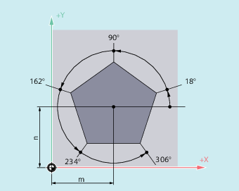

Travel commands with polar coordinates are useful when the dimensions of a workpiece or part of the workpiece are measured from a central point and the dimensions are specified in angles and radii (e.g. for drilling patterns).

| Command for the activation of rapid traverse motion | |
| Command for the activation of linear interpolation | |
| Command for the activation of clockwise circular interpolation | |
| Command for the activation of counter-clockwise circular interpolation | |
| Polar angle Angle between the polar radius and the horizontal axis of the working plane (e.g. X axis for | |
Value range: | ± 0…360° | |
The angle can be specified either incremental or absolute: | ||
| Absolute dimension input | |
| Incremental dimensions input With incremental dimension input, the last programmed angle applies as reference. | |
The polar angle remains stored until a new pole is defined or the working plane is changed. | ||
| Polar radius The specification is always in absolute positive values in [mm] or [inch]. The polar radius remains stored until a new value is entered. | |
| Note |
The polar coordinates refer to the pole specified with |
| Note |
The 3rd geometry axis, which lies perpendicular to the working plane, can also be specified in Cartesian coordinates (see the following diagram). This enables spatial parameters to be programmed in cylindrical coordinates. Example: |
No Cartesian coordinates such as interpolation parameters, axis addresses, etc. may be programmed for the selected working plane in NC blocks with polar end point coordinates.
If a pole has not been defined with G110 ... G112, then the zero point of the current workpiece coordinate system is automatically considered as the pole:
Polar radius RP = 0
The polar radius is calculated from the distance between the starting point vector in the pole plane and the active pole vector. The calculated polar radius is then saved as modal.
This applies irrespective of the selected pole definition (G110 ... G112). If both points have been programmed identically, this radius = 0 and alarm 14095 is generated.
Only polar angle AP has been programmed
If no polar radius RP has been programmed in the current block, but a polar angle AP, then when there is a difference between the current position and pole in the workpiece coordinates, this difference is used as polar radius and saved as modal. If the difference = 0, then the pole coordinates are specified again and the modal polar radius remains at zero.
The positions of the holes are specified in polar coordinates. Each hole is machined with the same production sequence: Rough-drilling, drilling as dimensioned, reaming …
The machining sequence is stored in the subprogram.
| Program code | Comment |
|---|---|
| N10 G17 G54 | ; Working plane X/Y, workpiece zero. |
| N20 G111 X43 Y38 | ; Specification of the pole. |
| N30 G0 RP=30 AP=18 Z5 | ; Approach starting point, specification in cylindrical coordinates. |
| N40 L10 | ; Subprogram call. |
| N50 G91 AP=72 | ; Approach next position in rapid traverse, polar angle in incremental dimensions, polar radius from block N30 remains saved and does not have to be specified. |
| N60 L10 | ; Subprogram call. |
| N70 AP=IC(72) | . |
| N80 L10 | … |
| N90 AP=IC(72) | |
| N100 L10 | … |
| N110 AP=IC(72) | |
| N120 L10 | … |
| N130 G0 X300 Y200 Z100 M30 | ; Retract tool, end of program. |
See also:
Circular interpolation: Introduction and overview
Polar coordinates